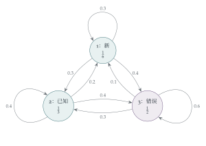

STEP III 1996，第 12 题
继续之前，请先阅读题目（原题为英文）。题目载于 STEP Support Programme 的题目资料库： step.maths.org/questions/96-s3-q12
引子
Ecks 教授的定理有一个规律：她下一个证明甚么，只取决于她上一个证明了甚么。一个过程的未来若只取决于现在而与过去无关，就称为马可夫链（Markov chain）。马可夫链无处不在：天气模型、蛇梯棋这种图版游戏、DNA 模型、Google 最初的 PageRank 算法，以至统计学家用来模拟复杂概率分布的方法，全都用得上它。
本题要求出各类定理在长远而言所占的比例，即平稳分布（stationary distribution）：长远来说，她的定理每六个之中有一个是新而正确的，而有一半是错的。然后题目把这条链在时间上倒过来运行，并问：已知今天的定理，昨天的定理是哪一类？
动笔之前
“每一行（row）之和为 \(1\)”这个条件是甚么意思？各列（column）之和是否也是 \(1\)？
第 \(i\) 行列出的是：已知现时的类型为 \(i\)，下一个定理属于各类型的概率；三者必有其一发生，所以每一行之和为 \(1\)。各列则不一定：第二列之和恰好是 \(1\)，但第一列之和是 \(0.6\)，第三列之和是 \(1.4\)。
逐步解题
阶段 1 一步
根据全概率定律（law of total probability），以现时定理的类型 \(i\) 为条件， \[b_j = \sum_i\mathrm{P}(\text{现时 } i)\,\mathrm{P}(\text{下一个 } j \mid \text{现时 } i) = a_1p_{1j} + a_2p_{2j} + a_3p_{3j}. \qed\] 用矩阵的语言来说，行向量（row vector）\(\mathbf b = \mathbf aP\)。
阶段 2 平稳分布
我们要求 \(\mathbf a = \mathbf aP\)，且 \(a_1 + a_2 + a_3 = 1\)。把各方程写出来。哪些最简单？
各方程为 \[\begin{aligned} a_1 &= 0.3a_1 + 0.2a_2 + 0.1a_3, \\ a_2 &= 0.3a_1 + 0.4a_2 + 0.3a_3, \\ a_3 &= 0.4a_1 + 0.4a_2 + 0.6a_3. \end{aligned}\] （它们并非独立：把三式相加，两边都得 \(a_1 + a_2 + a_3\)。）由第二式得 \(0.6a_2 = 0.3(a_1 + a_3) = 0.3(1 - a_2)\)，所以 \(a_2 = \frac13\)。由第一式得 \(7a_1 = 2a_2 + a_3 = \frac23 + a_3\)，而 \(a_1 + a_3 = \frac23\)，所以 \(8a_1 = \frac43\)，\(a_1 = \frac16\)，\(a_3 = \frac12\)： \[(a_1, a_2, a_3) = \bigl(\tfrac16, \tfrac13, \tfrac12\bigr). \qed\]
阶段 3 把链倒过来运行
\(q_{ij} = \mathrm{P}(\text{上一个 } i \mid \text{现时 } j)\)。运用贝叶斯定理（Bayes’ theorem），上一个定理和现时的定理都采用平稳分布。
根据贝叶斯定理， \[q_{ij} = \frac{\mathrm{P}(\text{上一个 } i)\,\mathrm{P}(\text{现时 } j \mid \text{上一个 } i)}{\mathrm{P}(\text{现时 } j)} = \frac{a_ip_{ij}}{a_j}.\] 例如 \(q_{11} = \frac{\frac16 \times 0.3}{\frac16} = 0.3\) 及 \(q_{21} = \frac{\frac13 \times 0.2}{\frac16} = 0.4\)。全部结果如下（以 \(i\) 标示行，\(j\) 标示列）： \[(q_{ij}) = \begin{pmatrix} 0.3 & 0.15 & \frac{2}{15} \\ 0.4 & 0.4 & \frac{4}{15} \\ 0.3 & 0.45 & 0.6 \end{pmatrix}. \qed\] 现在是每一列之和为 \(1\)，因为第 \(j\) 列列出的是上一个定理各种可能的类型。

回顾
以矩阵表达全概率定律。链每走一步，就是把一个行向量乘以矩阵 \(P\)。
平稳即特征向量（eigenvector）。\(\mathbf a = \mathbf aP\) 说明 \(\mathbf a\) 是 \(P\) 的左特征向量，对应的特征值（eigenvalue）为 \(1\)。
用贝叶斯定理倒推。逆向概率构成另一个随机矩阵（stochastic matrix），由正向的随机矩阵和平稳分布构造而成。
背后的数学
收敛至平衡
让 Ecks 教授从任何一个定理开始；再证明 \(n\) 个之后，类型的分布是 \(\mathbf a_0P^n\)。对于像这样的一条链，即每种类型都可以紧接在任何一种类型之后，不论起点为何，\(P^n\) 都会收敛至一个每一行均等于平稳分布 \((\frac16, \frac13, \frac12)\) 的矩阵。收敛的速度由 \(P\) 的其他特征值（这里是 \(0.2\) 和 \(0.1\)）决定，它们以几何方式缩小：只需几个定理之后，她的过去就被遗忘了。这个关于马可夫链的遍历定理（ergodic theorem）是大学二年级概率课程的核心结果，马可夫链蒙地卡罗（Markov chain Monte Carlo）方法之所以行得通，靠的正是它：要从一个复杂的分布中抽样，就设计一条以该分布为平稳分布的马可夫链，然后让它运行一段长时间。
可逆性
逆向链 \((q_{ij})\) 与正向链 \((p_{ij})\) 并不相同：从她的定理的一份长纪录中，你可以分辨出时间的方向。若一条链的逆向版本与正向版本一致，即对所有 \(i\)、\(j\) 都有 \(a_ip_{ij} = a_jp_{ji}\)，就称为可逆（reversible）；网络上的随机游走（random walk）以及处于热平衡的物理系统的模型都属此类。可逆性是一个威力强大的性质，因为它令平稳分布很容易求出。
马可夫（Andrey Markov）在 1906 年引入他的链，部分原因是要证明大数定律（law of large numbers）并不需要独立性；当时他正与数学家 Pavel Nekrasov 争论，后者声称独立性是必需的。1913 年，马可夫把他的想法应用于普希金（Pushkin）的诗体小说《叶甫盖尼·奥涅金》（Eugene Onegin）的首 \(20\,000\) 个字母，把每个字母分为元音或辅音，并证明每个字母的类型取决于前一个字母的类型，而这种关系可用一条两个状态的链很好地描述。这是史上第一次对文本作统计分析，也是所有预测输入系统的始祖。
思维技巧
当一个系统以固定的概率在各状态之间转移时，把分布写成向量，把转移写成矩阵。这样，长远行为就变成一个关于特征向量的问题。
在大学里，这样做会把第 7 章的线性代数带进概率论。佩龙－弗罗宾尼斯定理（Perron–Frobenius theorem）保证平稳分布存在，而其他特征值则量度到达平稳分布有多快。
延伸练习
兔子窝。试做 STEP III 2003，第 13 题：在一个正方形的四个顶点上的随机游走，每个顶点各有一个出口，以首步方程求解。
两步。若 Ecks 教授上一个定理是新而正确的，求再下一个定理属于三种类型的概率。
特征值。证明 \(P\) 的特征值为 \(1\)、\(0.2\) 和 \(0.1\)。
可逆吗？检查 Ecks 教授的链是否满足 \(a_ip_{ij} = a_jp_{ji}\)。答案告诉你甚么？
延伸阅读
James Norris, Markov Chains（Cambridge University Press）。标准的大学本科教科书。
Olle Häggström, Finite Markov Chains and Algorithmic Applications（Cambridge University Press）。篇幅短小，讲马可夫链蒙地卡罗尤其出色。
Brian Hayes, “First links in the Markov chain”，American Scientist 101 (2013)。重述马可夫对普希金作品的分析。